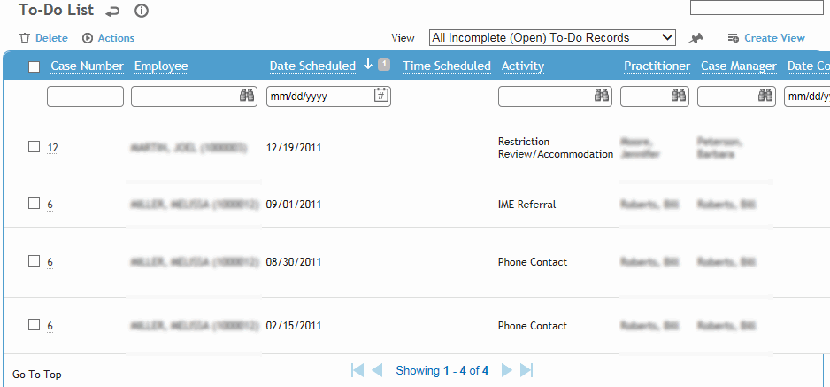
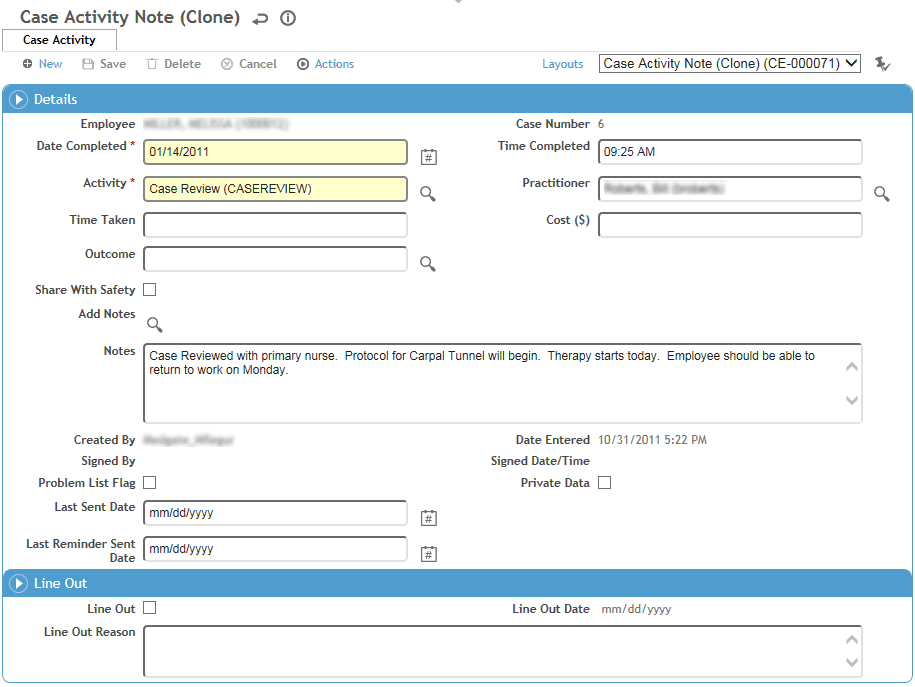

If you have a case record open, you can view activity notes on the To Do List tab or the Case Notes tab. Click a link to view full details or to mark a To Do activity as complete.
To view all of your To Do activities for all cases, in the Occupational Health menu, click To-do List.

To print a list of all To-Do notes for all cases for a particular provider, choose Actions»Case Provider To Do List Report.
To view the related case record, select the checkbox beside the activity and choose Actions»Open Case Record.
To view the details of an activity and mark it complete, click a link. See below for information about editing activity notes. If you mark an activity as Complete, it is removed from the list.
A case activity note can be created from the To Do List tab or the Case Notes tab. To enter activities that are scheduled to take place in the future, start from the To-Do List tab.
The content of an existing activity note can only be modified by the user who created it (shown in the Created By field) and within an interval of time set in the system settings (see Changing Your System Settings). After that, the note is permanent. The note is also permanent if it has been signed.
On the To Do List or Case Notes tab, click New.
Alternatively, to record a new completed activity with the same Activity code as an existing completed note on the To-Do List tab, open the existing note and choose Actions»Create Case Note.

You can quickly create case notes for multiple completed To-Do records: on the To-Do tab, select one or more completed To-Do records and then choose Actions»Create Case Notes.
If the activity has been completed, select the Outcome and enter the Date Completed, Time Completed, and the Time Taken (in minutes).
If you created the note from the To Do List tab, enter the Date Scheduled and Time Scheduled.
Select the Activity and enter any cost associated with this activity.
The Practitioner defaults to the one selected on the Case tab, but you can change this if necessary.
If you want this note to be displayed in the Incident Notes tab, select Share with Safety.
Click the Add Note search icon to select standard note text from those stored in the AddNote look-up table and/or enter new notes in the Notes field.
If you are the user identified as the Practitioner, you can sign the note (choose Actions»Sign and enter your login password when prompted). A signed note is locked from further edits.
To view a list of all the unsigned notes you created, return to the list of cases and choose Actions»Review Unsigned Notes. Select one or more (or all) notes and choose Actions»Sign.
If you need to revise a completed activity note (not a To Do note) but retain the original, e.g. if it has been signed or manually locked, you can “line out” the note. This can be done by an administrator, the creator of the note, or the user identified as the Practitioner.
Select the Line Out Note checkbox at the bottom of the Note form, and enter the Reason.
You are asked if you want to create a copy of the original; if you choose Yes, the original note is cloned into a new note, except for the date and time.
The lined out note still appears in the list of notes, identified with the Line Out checkbox, and is locked from further edits.
Click Save. If the selected Outcome is defined to automatically create further to-do activities (as defined in the CaseActivityOutcome look-up table), the case’s To-Do list will be updated with the new activity(ies).